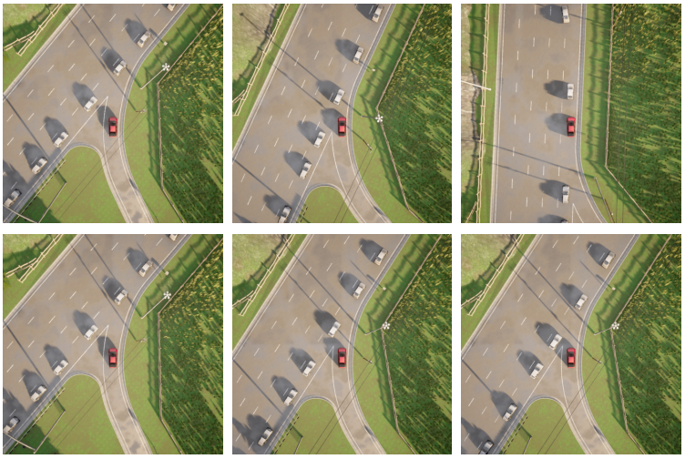
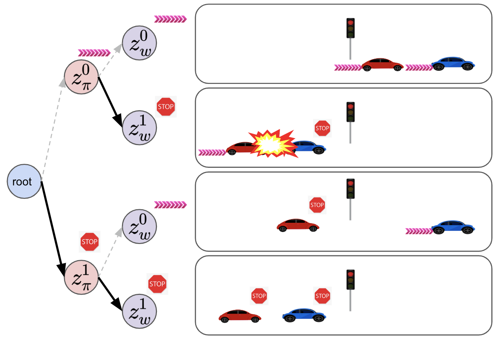
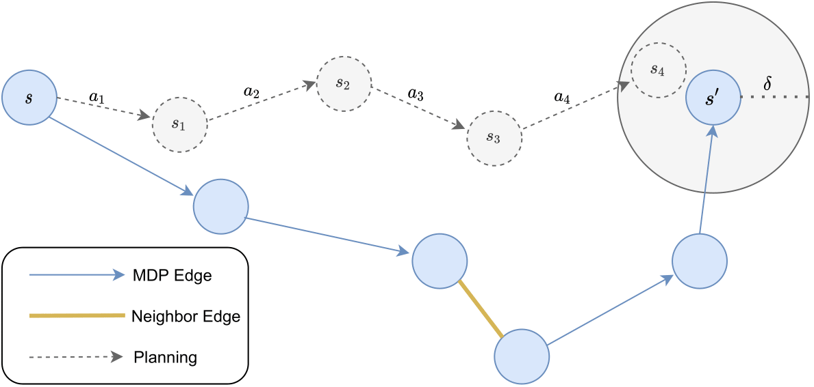
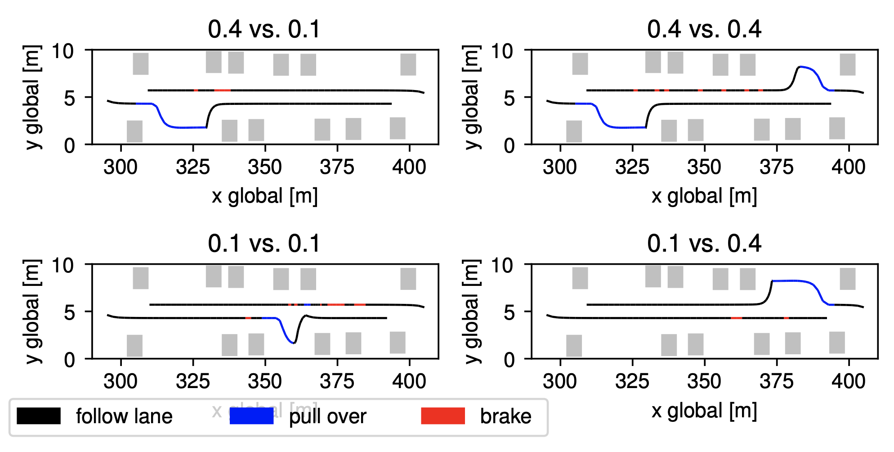
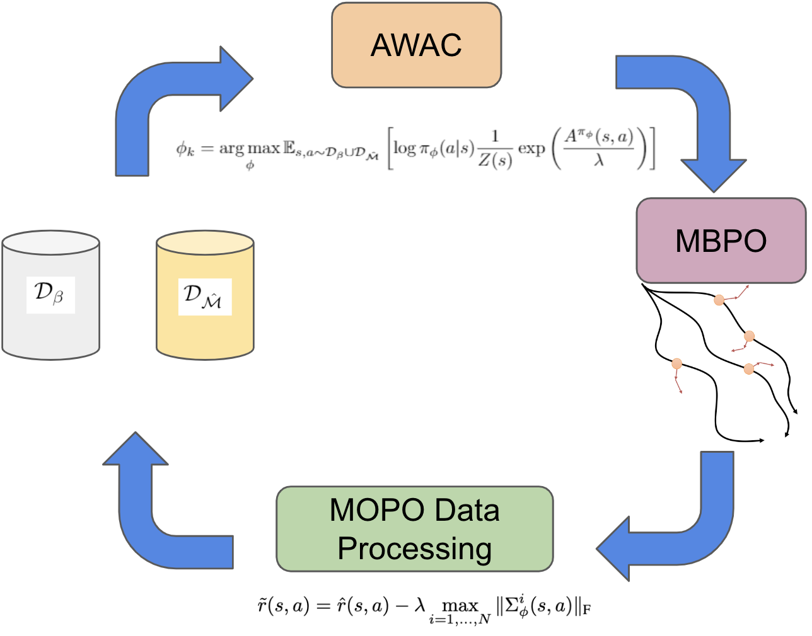
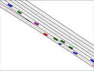

|
I recently graduated with a PhD from the Robotics Institute at Carnegie Mellon University, where I had the good fortune to be co-advised by Professors Jeff Schneider and John Dolan. My research interests are focused on deep reinforcement learning, generative modeling, and deep learning for prediction and planning. I am excited about developing and deploying machine learning systems for real-world applications like autonomous driving. I received my Bachelor's and Master's at UC Berkeley, where I did research in reinforcement learning for robotics as part of Professors Sergey Levine's and Pieter Abbeel's group. Email / CV / Google Scholar / LinkedIn |
{kind=link}
|
|
|  |
Adam Villaflor, Brian Yang, Huangyuan Su, Katerina Fragkiadaki, John Dolan, Jeff Schneider ICRA, 2024 paper / code |
|  |
Adam Villaflor, Zhe Huang, Swapnil Pande, John Dolan, Jeff Schneider ICML, 2022 paper / code |
|  |
Ian Char, Viraj Mehta, Adam Villaflor, John Dolan, Jeff Schneider NeurIPS Offline Reinforcement Learning Workshop, 2021 paper |
|  |
Christoph Killing, Adam Villaflor, John Dolan ICRA, 2021 paper |
|  |
Adam Villaflor, John Dolan, Jeff Schneider NeurIPS Offline Reinforcement Learning Workshop, 2020 paper |
|  |
Samuel Triest, Adam Villaflor, John Dolan IV, 2020 paper |

|
Gregory Kahn*, Adam Villaflor*, Pieter Abbeel, Sergey Levine CoRL, 2018 paper / code |

|
Gregory Kahn, Adam Villaflor, Bosen Ding, Pieter Abbeel, Sergey Levine ICRA, 2018 paper / code |

|
Gregory Kahn, Adam Villaflor, Vitchyr Pong, Pieter Abbeel, Sergey Levine arXiv, 2017 paper |
|
Template taken from here! |